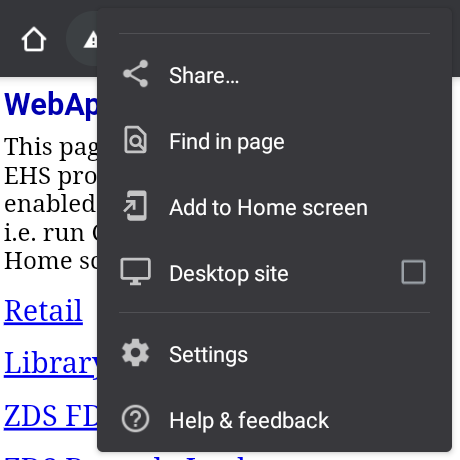

PWA issue on Zebra WS50 - installation of standalone website app not working
//Expert user has replied.
Hello,
we have developed application with Oracle Apex which are normally working as standalone apps on our Zebra Scanners MC33xx. After opening the website in Chrome Browser, there is immediatelly possibility of installation the application as standalone fullscreen app.
We started to modify the apps for Zebra model WS50, but after opening the website app in Browser, it is not possible to install it as standalone application.
Do you have maybe any experiences, what needs to be set differently on this kind of devices? The device WS50 has different launcher compared to standard Android devices, as the screen is really small and needs specific UI setting.
Thank you.
2 Replies
If I recall correctly the Launcher on the WS50 is not as full featured as a Touch Computer capable device.
As such the support for PWA app methods may not be capable.
(Note that WS50 uses AOSP and not GMS Android - so this too is a factor.)
Please refer to this guide for WS50 related information:
https://techdocs.zebra.com/emdk-for-android/13-0/guide/ws50_programming/
There is a way to add a webapp icon to Enterprise Home Screen running on the WS50 as detailed ( for other Zebra Android devices) in my blog here: Enterprise Home Screen | Add a Full Screen Link to a Chrome Webpage | Developer Portal
This requires EHS to be configured to enable pin shortcuts and set as the default launcher , after which if you browse in Chromium to your own webpage (and provided it has the required "mobile-web-app-capable" tag in the page source) you will see an option to 'Add to Home screen' as per the screenshot below:
